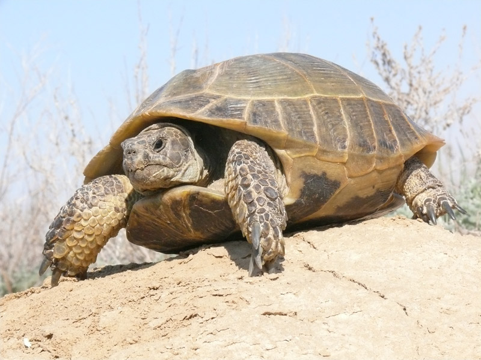

Зебра – животное, имеющее тело средних размеров, достигающее более 2 метров в длину. Вес зебры составляет 300-350 кг. Хвост у неё средней длины, обычно вырастает до 50 см. Самец зебры крупнее самки, его высота в холке составляет 1,4 — 1,5 метра. У этих животных достаточно плотное и коренастое телосложение. Ноги зебры короткие, оканчивающиеся крепкими копытами.

Лев – одно из крупных хищных животных, принадлежащее к семейству кошачьих. Существует несколько разновидностей этого животного, кроме этого известно немало гибридов, появившихся от смешения разных видов. Каждый из них отличается определенными особенностями, но имеет и сходство. Местное население земель, которые размещены рядом с ареалом обитания зверя, называет его «дикой кошкой» и считает опасным, старается уничтожать. Из-за этого популяция этих животных сильно сократилась. Между тем, лев – животное интересное и своеобразное, поэтому стоит знать, чем он отличается от других представителей фауны.
 3
3
Черепаха – это животное типа хордовые, класса пресмыкающиеся, отряда черепахи (Testudines). Эти животные существуют на планете Земля уже более 220 миллионов лет. Латинское название черепаха получила от слова «testa», означавшего «кирпич», «черепица» или «глиняный сосуд». Русский аналог произошел от праславянского слова čerpaxa, которое в свою очередь произошло от измененного древнеславянского слова «čerpъ», «черепок».
Слоны — гиганты среди животных. Высота слона 2 — 4 м. Вес слона — от 3 до 7 тонн. Слоны в Африке, особенно саванные, нередко имеют массу до 10 — 12 тонн. Могучее тело слона покрыто толстой (до 2, 5 см) кожей бурого или серого цвета с глубокими морщинами. Детеныши слона рождаются с редкой щетиной, взрослые особи практически лишены растительности.